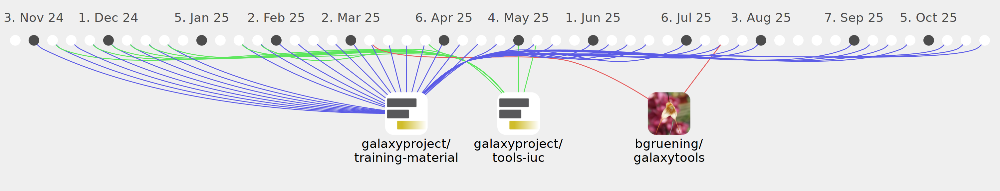

shiltemann

Commits all-time: 5723
Commits last year: 907

(898)
- 36b262d
- 83910a7
- 4213237
- 316301a
- 3478f45
- 029ba9e
- 90aa3b9
- 0436fbf
- cb3fa9f
- 990666a
- 64d1c34
- 5bb9483
- 3f529c4
- 99730b4
- 1a798b1
- 795e6de
- c2ecb85
- 0eb89d4
- 3130540
- cf2bc23
- 578f7ca
- 1894566
- 7f792af
- 5daf29d
- 85aa65f
- 554a408
- eeca86a
- b0a29bd
- bcff8c9
- 0823103
- c36fc11
- cb8901b
- 5c3a334
- 416723c
- c4e7407
- a751343
- eddad4b
- 6f70cb6
- 853e5f3
- d6cfcb2
- 8e1de2c
- 52fd3c7
- ebaf70f
- c99991a
- d250019
- e0d71ab
- 75c2694
- 305f83e
- 937a240
- 9634989
- b58d818
- c6886fe
- 7908495
- 2cba042
- e53f862
- a76fb2e
- 1c3edad
- e33928b
- 6d8e997
- d1f08a6
- a17af66
- 234b447
- d88cb4a
- 3848d75
- 2bdc773
- a6b78da
- ec6c03e
- 5fc2fff
- 256d01e
- 57ed658
- 2d0a79d
- 58070b6
- f112494
- 5e444fc
- 94eaaa0
- f414c7e
- d175f50
- 616cab8
- 7701244
- f58d513
- 4ba4b4a
- 51dc275
- 92aa9e2
- 80a54dc
- 3187cb6
- 9feb7f0
- b0848ed
- 7b49da7
- 0e311cd
- 6c462d5
- 68ef3f3
- 84fb148
- d66c579
- 9c836ee
- 6b5c226
- 1b0e19b
- 94df215
- dce6402
- f400f1a
- e7af1b2
- ac1b26c
- 95c7d18
- 06db298
- b4af0cd
- 3d72364
- a56b234
- 06f6ace
- 884ecf8
- b0ac8a4
- 048213b
- c226021
- d26b5f3
- 63bb1f1
- c96ceae
- f7a401d
- 8ae05d5
- a35292e
- 45c1fab
- c81aa09
- a758003
- 55cd1ab
- d1de029
- 0ce11ac
- 1cfdbd4
- e93d02d
- 742bbf9
- 0f675ce
- 5ecb656
- 91adf79
- 10a5ade
- 0eaac1d
- e94f458
- c980e3c
- cfe851e
- 612e32d
- 838b87e
- afa0700
- bffa3d3
- 70f2382
- 47ca7fa
- 4338cab
- 20a3cbe
- 53911ce
- b5aa800
- 644ade0
- d7e4fae
- 7b7d438
- 1987049
- 60133d8
- 35477f9
- a22bf32
- a8f3095
- 2598ab2
- afcc3f4
- 299bb7c
- e8f31d4
- 4900444
- e718124
- f68a0ad
- 96f5cd9
- 847cf91
- a75b106
- 55d3e89
- 9fad9c4
- b406531
- e402e0e
- 2d0cd1e
- 0549706
- 3974044
- 768a8fb
- b706e1d
- c07e071
- 019f9e6
- b4b90e0
- d8e7ce3
- c4d00ed
- aa3f5e9
- 2949518
- cc63700
- b14487d
- ab37e8a
- 068c4e7
- 41544cc
- d12e566
- 0fc6808
- 41c83ce
- eacc45a
- 86179ea
- 7a3091f
- 8ab532a
- fedff0b
- ca93911
- 98fc7e3
- 0f7ba02
- acd4a9b
- bbdf8c3
- 5cd02a5
- 0884b9c
- 3e0841d
- 611c7d9
- 14d2741
- fd9e526
- 2a016a1
- 6054cbe
- 45b7293
- 786f575
- a647893
- 0c11f60
- f38b587
- 5af9cae
- 795eeef
- 57fd81e
- 8805683
- 3cc4b96
- 1033ca2
- aba330f
- bb221e6
- 8f3aa05
- 0e69715
- 1478ceb
- 5b4ee71
- 9ad8674
- 8f89081
- c9b496a
- 20b49b7
- bf07967
- fccd383
- 4e0ccf2
- 7da9d95
- ba17eab
- e4c737c
- 7727818
- 2582ae2
- e667c94
- f721639
- 134cb0d
- f666326
- e966836
- a6641df
- 7c8634d
- 50da9ea
- b2a9c61
- 13834fe
- ca1dfcd
- 9e9269c
- e235ef5
- 4a97459
- 13ec5f9
- 029ba84
- 30c8c1d
- 5e17a65
- 1b3f24a
- 70c7807
- 0c40fa5
- 3fbdd34
- ef0974c
- 4295d96
- c56f4e6
- c23b210
- 5b0fc8f
- 75aa51f
- 1019469
- 0d35d97
- 5fee460
- 46e6f61
- 1569e84
- aeef136
- f84cd36
- cc8a41e
- 27ba265
- 314c7be
- 4537823
- 88658f3
- 18f95b0
- f05ec0f
- 384b1c4
- 5db97db
- 99cd104
- 2d25acd
- ff256cd
- c46b9ab
- df438df
- 94b67f1
- 99bdb85
- 22f92e2
- ac458e0
- 72b9211
- 9e47ff2
- 24c7df0
- e226d22
- 97e5517
- 26dfddb
- 9497b81
- 48e413c
- 630cb39
- 4d66bd1
- 7cca898
- 483a823
- f7a81b8
- ed6d717
- 77dc702
- f67ac9c
- 6869539
- 3533673
- 6fbfb55
- 93ba57c
- f880188
- 933f3a6
- 2baa8b4
- cbaaace
- 1580278
- 0355031
- c36a66e
- 7664f1b
- 7bbd8de
- cc9fe96
- 215f9a0
- 2f8267d
- ebbc11a
- 8becdbd
- 69cc82d
- cd1bcf5
- 5627834
- 7042ee3
- 720ee5a
- 5ec6efc
- 274d791
- 3658de7
- 836a2e1
- d07949a
- 0b6bad3
- fc21ace
- b1a71f0
- d82f789
- 756e71f
- 3574fa7
- f6b2e20
- efc16c7
- 7538b8a
- 452f2ec
- 2762f60
- 7209937
- 55d7f3a
- 5372191
- 8ceba88
- d1e3145
- 604d22e
- 97420c2
- 6920b65
- e43e4f2
- dd563ce
- b464336
- 0850d5b
- e52bf5c
- a270038
- 161bcaf
- 1a6017a
- cb14830
- ff704ff
- 0d014b6
- 8a2fbd8
- 95f18d4
- 70d844b
- 62f42bb
- 3c4eeaf
- 32bf9e4
- f9ba984
- 1c5c68c
- 634c620
- 600e4c7
- 64f79b8
- c721532
- 1d47e29
- dbcb699
- a9c503a
- 2b884c8
- b279a82
- 5638710
- 7d8fc05
- 3c2d85d
- 1fe177b
- 385cf01
- e294863
- d2962f9
- 410db93
- 7a5c196
- 5df4d44
- d7ef654
- 9f267c9
- f32579d
- 3dcb710
- 9591095
- 9ac5eb2
- d5c3206
- a1f0281
- 3409bbd
- 0930c6f
- e5725d8
- cffe0c7
- 6ff7c03
- b4945df
- c26d24d
- 31c8da8
- 36eceec
- a83c857
- d40d839
- d638878
- 936aeae
- d3dbe2c
- 985f565
- 6197541
- 8d94df7
- a8ef69e
- f081bff
- 0f46b66
- 2f026cd
- adc571c
- 92c447f
- 672a050
- 215911e
- e897e48
- db50d92
- 521f8a6
- 5b17950
- 9e6bb45
- 5bfef7b
- 2e4f571
- ebe3917
- 2154a47
- 71e503b
- 9928eac
- 82173d6
- 8bbdff6
- 03ae2f1
- 1831937
- faf42ea
- ed6f95a
- 9761e7c
- db37fb5
- 825b984
- c84c05a
- 5f14649
- f71cdaa
- b343059
- b301a1e
- fc95a5f
- 87999ba
- 6b12faa
- 6c4ac48
- 9ffe9f2
- 8bef72a
- 9a17ec6
- d0bf79e
- 1b5c647
- 3df99a6
- 7c8967a
- 088d2c1
- b3956b4
- 2c0d714
- 5564f52
- a44696b
- 2db3ff6
- 7adc589
- 8005de6
- df3a3bb
- a2cabc3
- 014f97c
- 592b09e
- d6bca08
- 1cb70f8
- 298d638
- 7a8e9ef
- a009e74
- 1d33a8a
- a4c0998
- 85a9302
- 47e2ed9
- 579f0cd
- 82d4e7c
- 0d64e9c
- 469d53f
- db7b1a8
- 3a8471e
- c6a45ed
- 461d58d
- 89c767f
- 6ecedf8
- e2a8b51
- e4cc8e4
- 4956268
- 856a83c
- ae4892c
- 9f9a443
- 7520ed5
- cb162b4
- de66653
- c3c7316
- 94b615e
- cda7d1d
- a1888b7
- 1956f2a
- 3518274
- 9399ec1
- f1fbb45
- 3d24ae1
- 5032b24
- 466a449
- 6ff40e9
- 9ad1451
- 53e4c7d
- ff628d0
- 8bbdfc1
- d524d83
- 7a759cf
- 1734d37
- 83db6de
- b0c2151
- 7499cb9
- 7ae54e4
- 8bd6f2d
- 835f9b1
- b023d4e
- acfd83f
- be03ad5
- 6323692
- 175d817
- 11cd834
- 8c11f11
- dca1195
- 3039c89
- 2e1f8d4
- b52442f
- d2a1583
- b295f06
- 50d0afc
- 8b2f8a2
- a289a4c
- 009e21e
- d8e3166
- 861ee29
- 7a9b655
- e26680b
- aa8b7f4
- d0c95bf
- 99bc8b3
- 867e525
- 3f67a3e
- cd73aa7
- e8654ee
- b352793
- fb28232
- 67c51e3
- 7ca118b
- a07534d
- 07248ff
- e658758
- e3d8e1d
- 1c808c6
- b7d8ed5
- a71f1d7
- b2f2ca5
- e2188e2
- 23219d5
- cef8782
- 7d82394
- cc2e111
- 0a8ffa3
- ca7e42e
- db9cf43
- 07b56ec
- e25f799
- 0fd0738
- 92f1809
- eadfd12
- f95c905
- 7f3ff10
- 8108ecd
- 8caa557
- 37cfd4d
- 7efddc0
- b7e7ca2
- 4c835fc
- 5ffb060
- 56f9ed3
- 2732352
- 4a36732
- b20a9d2
- 49b063e
- 4bcfb18
- 3a253ec
- 07e10be
- 0669c0d
- 21655ad
- aca313b
- f91e232
- 294e2d5
- bdd582c
- b38ca26
- d9284c1
- bf13ea0
- b387b21
- f505207
- 473d81e
- 810e067
- 431f388
- 9345681
- 690d43c
- 0c754c2
- 9a7806d
- 932f1e8
- 8b7f5c4
- 17fab8f
- a99362e
- 483aef5
- 2a4e79a
- adfb892
- d934c63
- 0431e67
- 0125a7f
- 52f3bde
- 4d7e1c5
- 438d4cf
- fd02a8b
- 3ad67f0
- f26e159
- e7b8942
- fc2898b
- d0a8ffc
- 9a1cfe1
- d608138
- d66d012
- 544bbba
- 4c1b661
- a6004fe
- 2104623
- bea9eb9
- bb95059
- a2879ab
- 53d186e
- 37643da
- 3e21aec
- 574e139
- d940f03
- 84510a7
- 2a90720
- 6a98599
- f3f7378
- 042c939
- 996c1cf
- 5e7b419
- c15982a
- f348b2e
- 80b0c7b
- a58d120
- 1ba4e84
- 853d93f
- bd016f4
- 7b8e3d5
- 9c766d8
- 8afc526
- 2077e64
- beb0b4c
- f712834
- 46abda6
- 2c96c85
- 8e137a4
- 8ccb2bb
- 80db6a3
- c21a0dc
- 319b5d2
- e00f942
- a7c4cc9
- 3b60f9f
- 8e2f33e
- bc64e03
- 9cf1446
- 2affb8c
- 192294e
- 24c42b4
- e5fb98b
- 15fef0f
- 62268f0
- d7db926
- 0df6a86
- 01f613a
- d9a7bf0
- 5092417
- 0886838
- 085ec8d
- 7a466c7
- 2f71aaf
- 0c3cf96
- 3c1f6ed
- 2ae2a61
- 3b173ba
- adb5cfa
- e90c866
- 5dad35f
- 6cb4471
- be9559b
- 364ca50
- 3adf311
- e74cce9
- bae47f3
- 68c2532
- ff9f9c1
- a69c1bd
- 7c8ba8c
- 95fb4ec
- 0d06a4b
- 26c1c3d
- 3894ab9
- cbc3e0c
- 4e851e5
- eedcef3
- c2404d8
- b9a4808
- 4aa8865
- c602670
- f5fac6f
- d5a6221
- f2f3fd6
- 45b4748
- 01eba03
- cd754cd
- 6a36bd8
- ca5492d
- 775332b
- a56adaf
- 5030895
- b7c5139
- 0d63151
- 6449c38
- 9664403
- a2d5ef1
- 16754af
- 96e4042
- 4cde469
- d94a925
- 874146a
- f71d93e
- 706f79f
- fa9f8fe
- 1d47c4f
- d224302
- cd8aa33
- 1366af3
- 916c22e
- 88d191f
- bbe2f4c
- f75803a
- ccfe22a
- b1cdd7b
- 1924d96
- 99be7d5
- 6e89fa0
- 921a093
- 2eb70da
- dfea50f
- 2207845
- 9044130
- 514726b
- 6baffc0
- 36e8426
- 427b72e
- b789a80
- dca00c4
- e1d752e
- 3ee8dc0
- 8b2e197
- bed934f
- fb102cf
- 3828df3
- 74c4beb
- aad6317
- 94783f2
- 3df1930
- ec6af4c
- ec21b9f
- ba2e967
- ea034ac
- 7c53dce
- 376a228
- da957d0
- ca9f4e7
- 916b98d
- 8e93ba2
- 99de97a
- 80297f6
- c737766
- ab763cd
- c620959
- 8e891b0
- a956345
- 08dcfc5
- 0549f84
- b7a80a4
- 676e717
- 42eff47
- d322eb1
- ee4e63b
- c9cd7b5
- 1eb50ce
- 53ccc20
- 6d4fdbb
- c2f279e
- a035736
- 4e1dfc2
- 78d9822
- e54f245
- 0d73ff6
- e822f5f
- 37d7cd3
- 1e83dea
- 799cfcd
- f259a81
- 5353bdb
- 7b2a183
- 775f948
- 63c65a7
- 6f92108
- 67fc763
- 2ccdff9
- 0bf874d
- b9629c9
- 4342b78
- 1817c81
- d51a782
- 4e31a57
- 32b9398
- 7c6f49d
- 93f49fb
- bb3e2df
- e7b7d02
- f563b66
- 2195547
- 4fdc57b
- c6b14f5
- e36387e
- 2fbd65e
- 6a18cc1
- f272bbc
- 9273448
- 6fd09cc
- 1e1c5bc
- 537f63e
- dd0e64c
- 2d86302
- 8131e82
- 67ce12f
- 1d5912a
- 4506b7f
- cb83ac2
- 45aa9e2
- f15072e
- a5586a1
- 423056c
- 538c5a7
- b6765c1
- 8b7b489
- 0c51def
- d302cca
- 2eb2299
- 53cc3fa
- cc9d5eb
- 2a87943
- 3890136
- 74d2842
- d427841
- 658c60a
- e59b363
- 8636d65
- 42cf592
- 849bbbc
- 3f3e680
- d6e9545
- 2717127
- b41e263
- eaf7fdd
- 4155b62
- 12815b5
- c8f8b9a
- 1c529f9
- 17d66bc
- 6c10e10
- dc08924
- 530956c
- 42042a2
- 6d0cc9c
- b1b2287
- 18d6708
- 48ec6a8
- cb34d4a
- 0ae51c2
- fa5803f
- 778cfdf
- 9184689
- 1820662
(5)
(4)